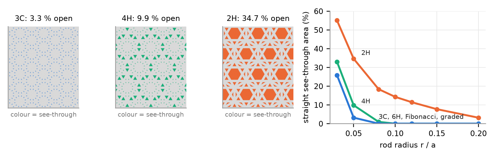
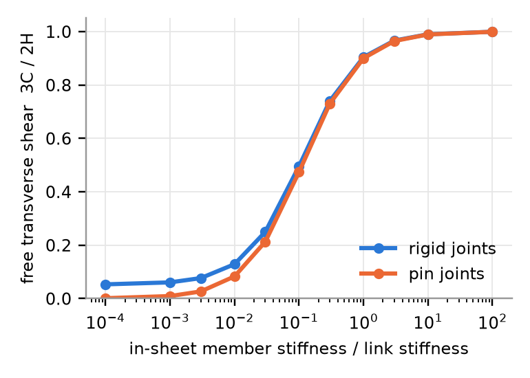
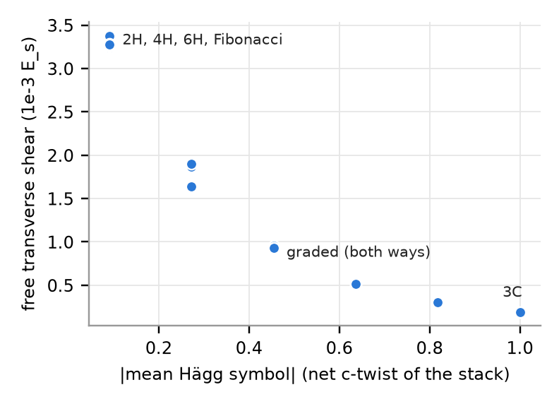

Lattice mechanics and a see-through/airflow proxy for c, h and mixed stacking sequences
In the Knitted HexOct, which DICTO proposed, each knitted sheet is one close-packed layer of nodes. Links join every node to the 3 nearest nodes of the next sheet. At a c sheet the links run straight on; at an h sheet they fold back in a chevron. All link lengths, angles and node counts are the same whatever the stacking, so all stackings have the same density. That makes the stacking sequence a candidate design dial: the same yarn and the same stitch count, but a different property, depending only on where the links turn. This study checks that idea in idealised lattice models.
Geometry (from the spec, studies/2026-11-02-knitted-hexoct): node spacing a = 1, sheet spacing √(2/3), links of length 1 at 54.7356°. Each block has 12 sheets with 6 × 6 nodes per sheet and is periodic in-plane. A program checks every node: 3 links up, 3 links down and 6 in-sheet neighbours. The sequences are written as c/h labels of the 10 inner sheets: 3C (all c), 2H (all h), 4H (hc…), 6H (hcc…), Fibonacci (abaababaab, a → c, b → h), and two graded stacks (5 h at the bottom and 5 c at the top, and the reverse). Members are round rods, radius r = 0.05 a, Es = 1, ν = 0.3. They are modelled as pin-jointed bars and as rigid-jointed 3D Euler–Bernoulli frame members. There are three sheet variants: links only (the sheets are just nodes); stiff sheets (in-sheet triangular members 100× stiffer than the links, our stand-in for nearly rigid sheets); and full (in-sheet members the same as the links; 3C is then the octet truss, 2H the hcp truss). Tests on the block: compression with bonded platens (C33) and with lubricated platens and free lateral strain (E3); transverse shear with bonded platens and with free in-plane strain (the bulk limit is 1/S55); and in-plane E1, E2 and G12 of the free plate. The 3D-periodic 6×6 stiffness matrix C is computed for 3C, 2H, 4H and 6H. Check: for 3C (full, pin joints) the computed E[100] equals ρ̄/9, the octet-truss value of Deshpande, Fleck & Ashby (2001). The computed ratio is 1.0000000000. Energy proxy: an event-to-event analysis with pin joints. Each strut buckles at the pinned Euler load π²EsI/a² and then carries that load unchanged; tension stays elastic. We report the work done up to 5 % strain. Airflow proxy: rods are capsules (round ends). The straight see-through fraction is exact: a line along the stacking axis misses a capsule exactly when its plan point lies more than r from the capsule's plan segment. Tortuosity is the shortest open path from each open point of the top plane to the bottom plane, divided by the thickness. It is computed on a 26-neighbour voxel graph, h = 0.02 a, checked at 0.0125 a.
| sequence | word | ⟨Hägg⟩ | C33 bonded | E3 free | G13 bonded | G13 free links only | G13 free full | E1 in-plane links only | work 5 % shear xz | see-through r = 0.05 | see-through r = 0.1 | tortuosity r = 0.05 / 0.1 |
|---|---|---|---|---|---|---|---|---|---|---|---|---|
| 3C | ABCABCABCABC | 1.000 | 14.865 | 0.492 | 3.715 | 0.193 | 3.360 | 0.051 | 3.50 | 3.25 % | 0 | 1.003 / 1.039 |
| 2H | ABABABABABAB | 0.091 | 14.865 | 0.492 | 3.715 | 3.378 | 3.699 | 0.063 | 3.28 | 34.7 % | 14.3 % | 1.001 / 1.008 |
| 4H | ABACABACABAC | −0.091 | 14.865 | 0.492 | 3.715 | 3.283 | 3.699 | 0.055 | 3.28 | 9.9 % | 0 | 1.002 / 1.021 |
| 6H | ABACBCABACBC | −0.091 | 14.865 | 0.492 | 3.715 | 3.276 | 3.699 | 0.055 | 3.28 | 3.25 % | 0 | 1.003 / 1.033 |
| Fibonacci | ABCBACABACBC | −0.091 | 14.865 | 0.492 | 3.715 | 3.275 | 3.699 | 0.055 | 3.28 | 3.25 % | 0 | 1.003 / 1.032 |
| graded c top / h bottom | ABABABACBACB | −0.455 | 14.865 | 0.492 | 3.715 | 0.927 | 3.626 | 0.057 | 3.28 | 3.25 % | 0 | 1.003 / 1.022 |
| graded h top / c bottom | ABCABCACACAC | 0.455 | 14.865 | 0.492 | 3.715 | 0.927 | 3.626 | 0.057 | 3.28 | 3.25 % | 0 | 1.003 / 1.027 |
Stiffness in 10−3 Es. C33, E3 and G13 bonded: rigid joints, links only (relative density ρ̄ = 0.0305). These values are the same for all sequences in every variant; with in-sheet members they are 14.810–14.865, 13.44–13.52 and 3.70–3.76 (ρ̄ = 0.0639). "Full": pin joints, links + in-sheet members. Work done in xz shear up to 5 % strain, in 10−6 Es, full, pin joints. In compression the first buckling happens at strain 0.0093 (bonded) and 0.0102 (lubricated), at stress 1.370×10−4 Es, in every sequence; there all 1188 links buckle together. Porosity 0.9406 (r = 0.05) and 0.7869 (r = 0.1) in every sequence. Full table: data/tables.txt.

Links only, pin joints. Every node has 6 bars, so the periodic cell has exactly 3N bars, the Maxwell isostatic count, in every sequence. The compatibility matrices show the same picture in every sequence: 3 macroscopic strains cost no bar stretching. These are the in-plane strains combined with εzz = −(εxx+εyy)/2; in 3C they are mixed with transverse shear. The 6×6×12 periodic cell also has periodic mechanisms: 33 (3C), 37 (4H), 39 (2H), 51 (6H). Each comes with exactly as many self-stress states plus 3, as Guest & Hutchinson (2003) show must happen in an isostatic repetitive frame. The finite 12-sheet block has 105 mechanisms in every sequence. So the link net alone is not rigid, whether c or h. It carries through-thickness compression only between bonded faces. With in-sheet members every sequence is rigid (0 mechanisms, 1191 self-stress states in the block). The hcp-type h stack is as rigid and stretch-dominated as the octet-type c stack: C33, C13 and C44 are equal, and E3 is identical.


The c stack has 3-fold (trigonal) symmetry about the stacking axis. Its stiffness matrix therefore has a shear-stretch term C14 = 1.31×10−3 Es: transverse shear is coupled to in-plane stretching and in-plane shear. In 2H, 4H and 6H, C14 = 0, as hexagonal symmetry requires. When the faces are free to strain in-plane, the 3C fabric can give way in shear by straining its sheets. If the sheets are soft, that costs little, so 1/S55 drops well below C55 (roughly by coupling² / in-plane sheet stiffness). With bonded platens the in-plane strain is blocked and every sequence gives the same value. Through-thickness compression loads all links equally (each at cos² = 2/3 of the strain) whether they run straight on or fold back. So C33, E3 and the buckling onset do not depend on the stacking.
Yes, c/h is a usable dial, for two properties only. It sets the straight see-through area: 10.7× from 3C to 2H at r = 0.05 a, at equal porosity, mass and thickness. It also sets the free transverse shear stiffness, by up to 17.5× when the sheets are soft and laterally free. It does not set compression stiffness, buckling onset, compression energy or pin-jointed rigidity. Possible uses, with what the model does and does not support:
Model limits. Idealised geometry: straight rods meeting at points, every link exactly length a. No yarn mechanics: no loops, compaction, friction, yarn twist, or yarns that cannot carry compression. Linear elasticity, apart from the buckling plateau of the energy proxy; no post-buckling softening; no contact. A finite block of 12 sheets, periodic in-plane. Results are given relative to the rod modulus Es and depend on r/a. Airflow is a geometric proxy (straight see-through area and shortest-path tortuosity), not a permeability. Physical tests of knitted samples (T-c and T-h of the spec) are needed before any application claim.
Octet-truss stiffness and the stretch-dominated/bending-dominated distinction are from Deshpande, Fleck & Ashby [1, 2]; our 3C check reproduces [1]. The mechanism and self-stress counts follow Guest & Hutchinson [3]. Spacer fabrics with one gap are established cushioning materials [4]. 3D woven, braided, stitched and knitted preforms are reviewed in [5, 6]. Lattices that copy crystal grains and twins ("meta-grains") were made by Pham et al. [7]. In atomic polytypes the elastic constants vary almost linearly with hexagonality [8]. In the results we saw, we found no mechanical comparison of hcp-type with fcc-type (octet) truss lattices, and none of mixed c/h stackings as a design variable. This is not a full literature review.
Also checked, not cited: library: Lalvani 1990, NASA TM-102635 (layered oct-tet truss part counts; pp. 1–3 read; no mechanics); Goyal & Lakes 2026 and Korshunova et al. 2020/2021 (octet truss; catalogue entries only); Krishnamurthy, Akleman et al. 2020/2022 (woven tiles; snippets only); Rodriguez-Horta et al. 2017 (close-packed layer interactions; catalogue entries only). Library queries: octet truss stretch-dominated; spacer fabric compression; 3D woven/knitted preform; hcp/fcc stacking elastic constants polytypes; Maxwell isostatic periodic lattice mechanisms. Web queries: the Deshpande–Fleck–Ashby octet paper; Guest–Hutchinson determinacy; warp-knitted spacer fabric compression; the Mouritz 1999 review; "hcp truss lattice vs fcc octet truss lattice stiffness stacking sequence"; the Pham 2019 meta-crystals paper. Scripts, data and full tables: study folder 2026-11-02-hexoct-knit-mechanics.